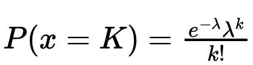

Poisson processes, renewal models, and outbreak probability
This page gives a short overview of the ideas behind the calculator:
the Poisson distribution, Poisson processes, renewal models, and the
analytic outbreak probability calculation built from early case counts.
Poisson distribution
The Poisson distribution is a discrete probability distribution for
counting how many times an event occurs in a fixed interval of time
or space.
Here, λ is the mean rate. For a Poisson random variable,
the mean and variance are both equal to λ.
It is often used when events are rare, independent, and occur with a
roughly constant rate over the interval being studied.
Connection to the binomial distribution
The Poisson distribution can be derived from the binomial model by
taking a large number of trials with a small success probability.
If the number of trials is n, the success probability is
p, and the mean is fixed as λ = np, then
taking n → ∞ and p → 0 gives the Poisson
form.

After substitution with p = λ/n and simplification, the
limiting expression becomes the Poisson PMF above.
Poisson process and renewal model
A Poisson process measures the random time required for a fixed
number of events to occur. The waiting times between events are
exponentially distributed, which makes the Poisson process a
special case of a renewal process.
f(t) = (1/λ) e^(-t/λ)
In an epidemic setting, a renewal model links the number of reportedcases at
time t to earlier cases and a serial-interval weight
distribution w.
The term R_t is the reproduction number, and
w_s is the probability that a secondary case is reported
s steps after the primary case.
Analytic solution overview
The calculator estimates the probability of a major outbreak after
observing the first few weeks of cases.
The main idea is to integrate over possible values of
R, weighting by how plausible each value is given the
early case counts.
First, the likelihood for the observed counts is written using a
Poisson model. Then Bayes' rule gives the posterior distribution for
R. Finally, the probability of a major outbreak is
averaged over that posterior.
If the process is subcritical, it tends to die out. If it is
supercritical, there is a nonzero chance of sustained spread. The
calculator combines both the early observations and the extinction
probability to estimate the final outbreak risk.
For more information regarding the analytic method, view the analytical page below!
Each earlier case contributes to future cases through a delay
distribution. If a parent case is observed at week t,
then offspring can appear at later weeks with probabilities
w1, w2, w3, ....
This is why the first few observed weeks are so informative:
they constrain the likely range of R and therefore
the probability of a larger outbreak.
μ_t = R(1 - ∑_{s: t+s < 3} w_s)
This quantity represents the mean number of offspring that appear
after the observed period and can seed unseen transmission chains.
What the calculator does
Accepts early weekly case counts.
Evaluates a grid of possible R values.
Computes the posterior over R.
Combines that posterior with extinction probability.
Returns the probability of a major outbreak.
The calculator is designed for early data, when uncertainty is still
high and the outbreak trajectory is not yet clear.
A natural extension is to allow the reproduction number to vary over
time, for example by making R_t stochastic.
One possible model is multiplicative noise, such as
log(R_t) evolving over time. This can capture changes in
behavior, reporting, or control measures.
Even when R > 1, random variation can still lead to
extinction in the early stages, so uncertainty matters.
Notes
This page is meant to introduce the key ideas behind the PMO
calculator rather than replace the mathematical derivation.
The calculator page contains the interactive controls and output
plots; this home page is the conceptual overview.
=======
Outbreak Site
Predicting the probability of a major outbreak
Overview
Mathematial approach to predict the probability of a major outbreak (PMO) given the number of infections each week (I1, I2 ....). The interface provides the user the possibility to simulate an outbreak and predict on previous data using 3 approaches as follows.
Analytical
Trajectory
Machine learning
Pages for machine learning and trajectory mapping to be added to navigation